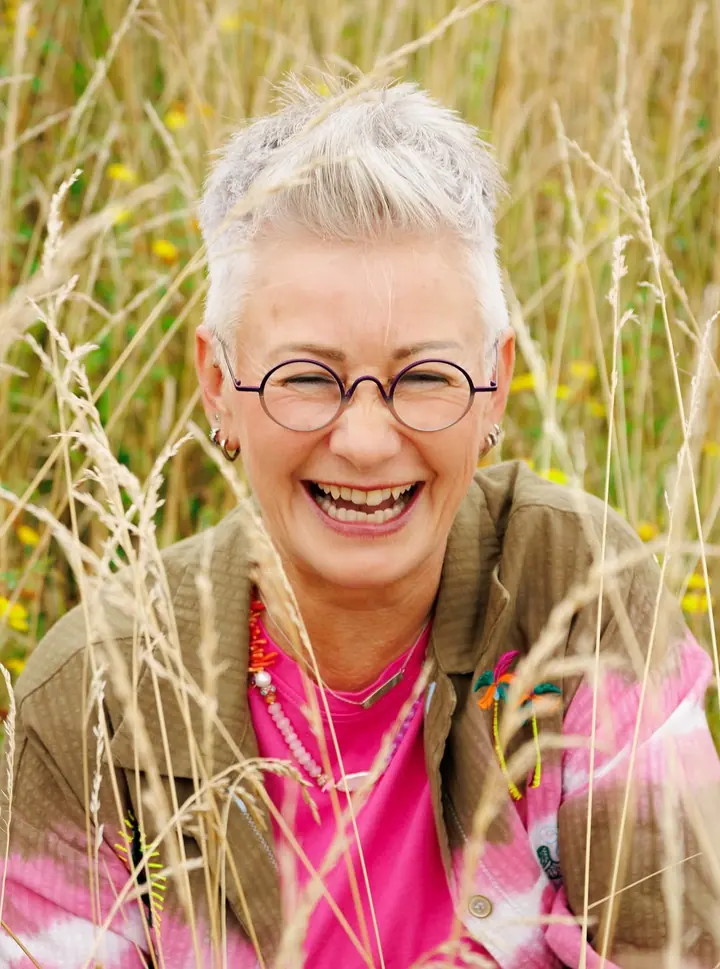
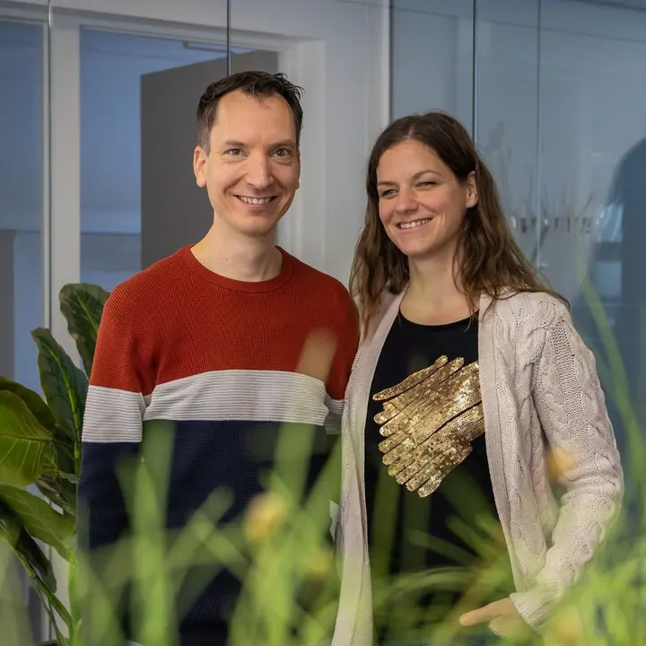
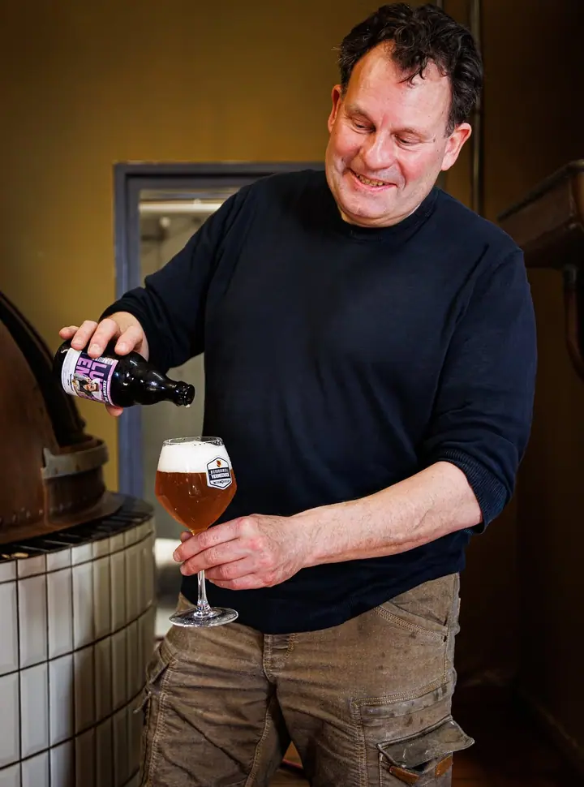
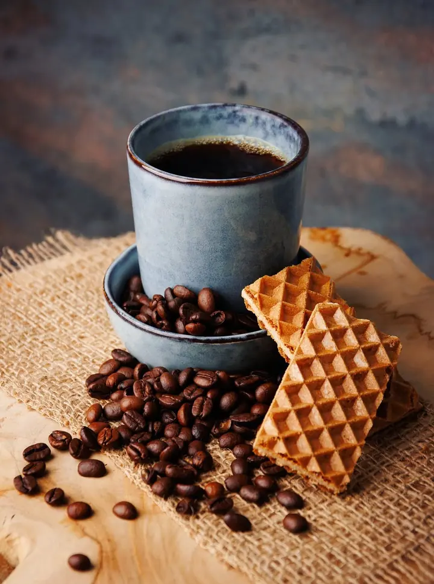
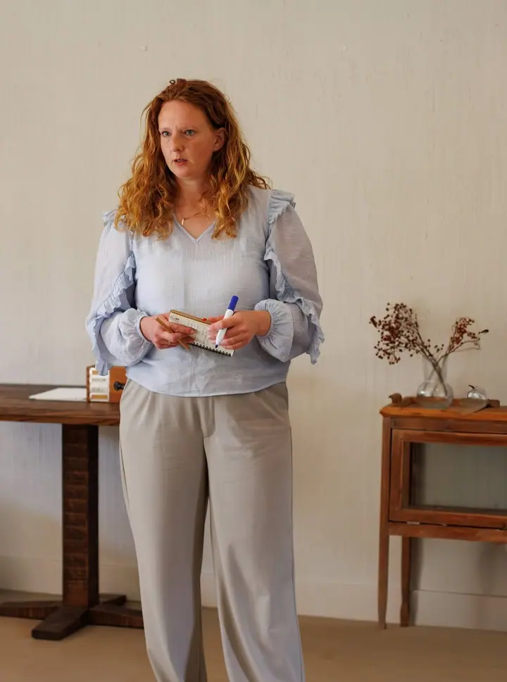
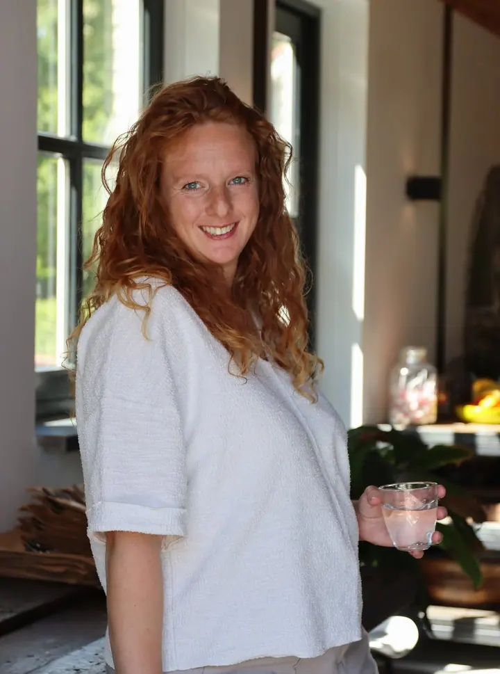
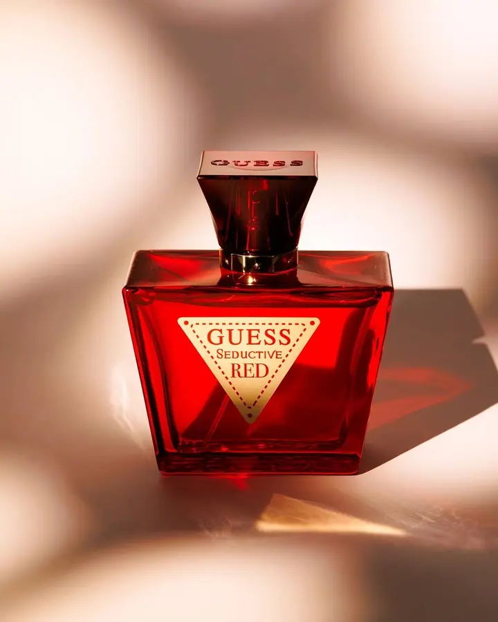
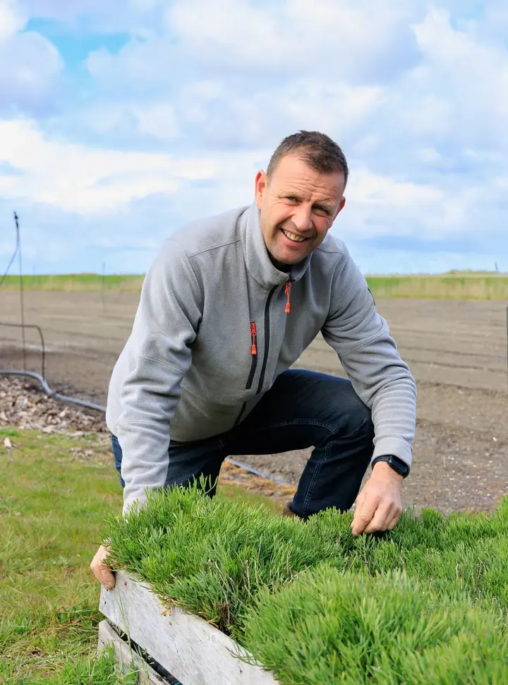

01 / 03
Focení pro podnikatele
Branding a business fotky pro váš web, sociální sítě a online marketing. Lidé obchodují s lidmi, proto vás ukážu takové, jací jste: spontánní, nadšení a profesionální.
Zeptat se na termín→







Fotky, na které budete hrdí
Zeptat se na termín →(01) Ahoj
Jmenuji se Karin a fotím podnikatele i rodiny v Zeelandu. Nepotřebujete žádné nucené pózy, stačí, když budete sami sebou . Pracuji v klidu a s přesností a tam, kde je to potřeba, vás jemně navedu .
133příspěvků s fotkami a příběhy
(02) Co fotím
01 / 03
Branding a business fotky pro váš web, sociální sítě a online marketing. Lidé obchodují s lidmi, proto vás ukážu takové, jací jste: spontánní, nadšení a profesionální.
Zeptat se na termín→02 / 03
Předem se přijedu podívat a společně si projdeme, co mají fotky ukázat. V den akce jsem na místě dřív a fotím tak, aby fotky odrážely vaši práci a respektovaly vaše klienty.
Zeptat se na termín→Dále nabízím
Uvolněné focení pro vás a vaši rodinu v Zeelandu. Na nic nemusíte myslet, o detaily se postarám já, abyste se z fotek mohli těšit ještě dlouhé roky.
↗(04) Postup
Od první zprávy po hotovou galerii.
Krok 1 z 4
Napíšete mi přes formulář a já se vám ozvu nejpozději do 2 pracovních dnů.
Krok 2 z 4
Předem se přijedu podívat na místo a společně si projdeme, co od fotek čekáte a k čemu je budete používat.
Krok 3 z 4
Jsem na místě s předstihem, abychom si mohli vše ještě rychle projít. Fotím v klidu a jemně vás navádím.
Krok 4 z 4
Dostanete fotky, které působí přirozeně a hodí se pro vaši značku i pro vzpomínky doma.
Lidé obchodují s lidmi.
(05) Za objektivem
Hodně lidí se před objektivem necítí dobře. Fotky přitom potřebují, ať už pro svůj byznys, nebo pro sebe domů. Fotky sebe samých sice mají, jenže se na ně neradi dívají. Možná to znáte i vy a v skrytu duše byste chtěli pár fotek, na které se budete dívat s dobrým pocitem.
Mojí rolí je pomoct vám, abyste se před foťákem cítili bez starostí. Nemusíte myslet na ten jeden záhyb ani na halenku, která nesedí úplně dokonale. To pohlídám já. Jemně vás navedu v postoji, světle a kompozici, takže fotky působí spontánně, a přitom jsou promyšlené do detailu.
Podnikatelům pomáhám s fotkami pro jejich (online) marketing a přemýšlím o něm s nimi. Na každého se dívám jako na krásného člověka, který si zaslouží dobře vypadat na fotce.
Karin
Karin · Fotografka pro podnikatele a rodiny
Vůbec ne, takhle to má většina lidí. Pracuji v klidu, jemně vás navedu v postoji i světle a na detaily, jako je oblečení, dohlédnu já.
Na web, sociální sítě a do veškerého (online) marketingu. Předem spolu probereme, co chcete se svou firmou vyzařovat, a fotky tomu přizpůsobíme.
Ano. Předem se přijedu podívat, projdeme si cíle fotek a v den akce dorazím dřív, aby vše proběhlo hladce.
Vyplňte jednoduchý formulář a napište svou otázku. Odpovím nejpozději do 2 pracovních dnů.
(07) Kontakt
Napište pár vět o tom, co si představujete, a termín, který se vám hodí.
info@karinsfotografie.nl